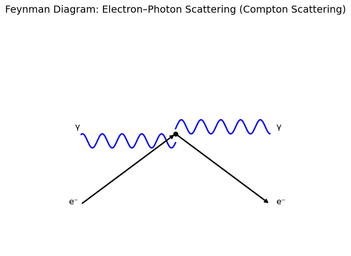
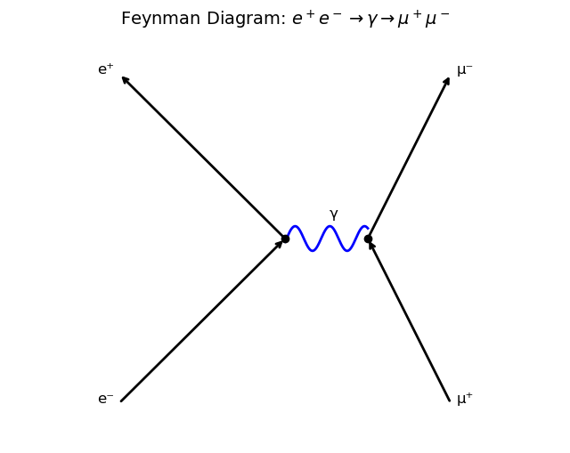

A5.3 Feynman Diagrams: The Visual Language of Particle Physics#
A5.3.1 Motivation: Visualizing the Invisible#
In classical physics, we often describe interactions with forces and trajectories. But in particle physics, interactions are quantum and often occur at very short timescales and distances, far beyond what we can observe directly.
To describe these interactions, we use Feynman diagrams—simple, elegant spacetime diagrams that represent quantum processes. They allow us to visualize how particles interact, exchange force carriers, and transform into other particles.
Just like circuit diagrams help engineers understand electrical systems, Feynman diagrams help physicists keep track of complex quantum events.
A5.3.2 Basic Elements of a Feynman Diagram#
Feynman diagrams are plotted in spacetime:
Horizontal axis: space (left ↔ right)
Vertical axis: time (bottom → top)
They are not literal pictures of motion—but rather symbolic representations of quantum events.
Interacting Particles:#
Straight lines with arrows = fermions (quarks, leptons)
Arrow pointing forward in time = particle
Arrow pointing backward in time = antiparticle
Mediating Particles#
Wavy lines = photons (electromagnetic force). NOTE: wavy lines are used for both external AND mediating photons.
Curly lines = gluons (strong force)
Dashed lines = W/Z bosons (Weak) or Higgs (provide mass)
Vertices:#
Points where lines meet represent interactions
At each vertex, conservation laws apply (energy, momentum, charge, lepton/baryon number)
Does the tilt of arrows matter?
The arrow direction (whether it points forward or backward in time) is crucial for distinguishing particles and antiparticles.
The tilt or slope of a line is mainly for visual clarity and does not correspond to a physical quantity. However, it often suggests the flow of the particle through spacetime and helps illustrate the interaction.
What Matters in a Feynman Diagram#
Diagram Feature |
Physically Important? |
Notes |
|---|---|---|
Particle identity (line type) |
✅ Yes |
Solid for fermions, wavy for photons, dashed for Higgs |
Vertex structure |
✅ Yes |
Must conserve charge, momentum, and quantum numbers |
Arrow direction on fermions |
✅ Yes |
Distinguishes particles from antiparticles |
Time flow (left → right) |
✅ Conventionally |
Optional, but commonly assumed in QFT diagrams |
Slope/tilt of lines |
❌ No |
Purely visual; does not affect physical interpretation |
A5.3.3 Example: Electron–Photon Scattering (Compton Scattering)#
Consider the process:
This is known as Compton scattering, where a photon collides with a free (or loosely bound) electron and scatters, transferring energy and momentum.
Physical Interpretation#
A real photon (e.g., from X-rays or gamma rays) approaches a free electron.
The photon interacts with the electron and scatters.
The electron recoils, and a new photon is emitted in a different direction.
This interaction is elastic, but the wavelength of the photon changes depending on the scattering angle (this is the Compton effect).
Inside the Diagram#
In this simplified diagram:
The incoming photon is shown as a wavy line from the top-left.
The electron enters from the bottom-left and exits to the bottom-right.
The outgoing photon is emitted toward the top-right.
The vertex represents the quantum interaction point.
Important Note: In a full QED treatment, this process has two contributing diagrams:
The incoming photon is absorbed, and the electron emits a new photon.
The electron emits a photon before interacting with the incoming one.
These are added together in the calculation of the total amplitude.
What About the Internal Lines?#
In a full Feynman diagram, you would show:
An internal (virtual) electron propagator between two vertices.
This virtual electron does not appear in the final state.
It’s an intermediate state allowed by quantum uncertainty.
But for introductory purposes, we typically use a single-vertex simplified diagram to illustrate the concept of scattering.
Conservation Laws#
At each vertex, the following are conserved:
Electric charge
Energy and momentum
Lepton number
Spin/angular momentum (depending on the analysis)
These conservation laws constrain the kinematics of the scattering and give rise to measurable phenomena such as the Compton wavelength shift:
Where:
\( \lambda \): initial photon wavelength
\( \lambda' \): scattered photon wavelength
\( \theta \): scattering angle
\( \frac{h}{m_e c} \): Compton wavelength of the electron (~2.43 × 10⁻¹² m)
Summary#
Compton scattering describes photon–electron interactions.
The process is mediated by a virtual electron in quantum field theory.
Feynman diagrams show incoming and outgoing real particles, and use internal lines to represent virtual mediators.
This process confirms the particle-like behavior of light and was historically crucial in validating quantum theory.
Feynman diagrams provide a simplified yet powerful visualization of quantum processes—but they are not literal pictures. They help organize terms in a perturbative expansion and enforce key conservation principles at each interaction point.

A5.3.4 Example: Electron–Positron Annihilation into a Muon–Antimuon Pair#
This Feynman diagram represents the process:
Process Description#
An electron and positron collide and annihilate.
Their combined energy produces a virtual photon ( \gamma^* ).
This photon is not incoming or outgoing—it is internal to the interaction.
The virtual photon then decays into a muon–antimuon pair.
Important Clarifications#
The photon in this diagram is virtual:
It does not exist as a free particle.
It mediates the interaction.
It can temporarily violate the energy-momentum relation ( E^2 = p^2c^2 + m^2c^4 ), because it is off-shell.
There is no external photon involved in this process:
The diagram does not represent an electron absorbing or emitting a photon.
All external lines (the initial and final particles) are real, observable particles.
Internal lines (like this photon) are not directly observable and are used to compute quantum amplitudes.
Physical Interpretation#
This is a pure annihilation process:
Input: a real electron and a real positron
Intermediate: a virtual photon ( \gamma^* )
Output: a real muon and a real antimuon
The virtual photon acts as a force carrier for the electromagnetic interaction between the initial and final states.
Why This Matters#
This process is a textbook example of:
Annihilation producing a different particle–antiparticle pair
The use of a virtual mediator
How conservation laws (energy, momentum, charge, lepton number) apply at each vertex
In particle physics, Feynman diagrams help us visualize how interactions occur—but they should be interpreted as tools for calculating quantum probabilities, not literal particle trajectories.

This shows:
Annihilation into a photon
Pair production from that photon
A5.3.5 Time Direction and Diagrams#
Sometimes, diagrams are drawn with time flowing left to right instead of bottom to top. That’s fine—as long as you’re consistent. What matters is:
Arrows on fermion lines show particle vs antiparticle
Bosons are neutral: no arrow
A5.3.6 What Feynman Diagrams Are (and Are Not)#
✅ They represent:
The amplitude of a quantum process
Conservation of physical quantities
Exchange of force carriers
❌ They are not:
Classical pictures of particle motion
Unique: many diagrams may describe the same process
A5.3.7 Summary#
Feynman diagrams are tools for visualizing quantum interactions.
They represent particles as lines and forces as exchanged bosons.
Every vertex represents a fundamental interaction.
They help track conservation laws and interaction probabilities.